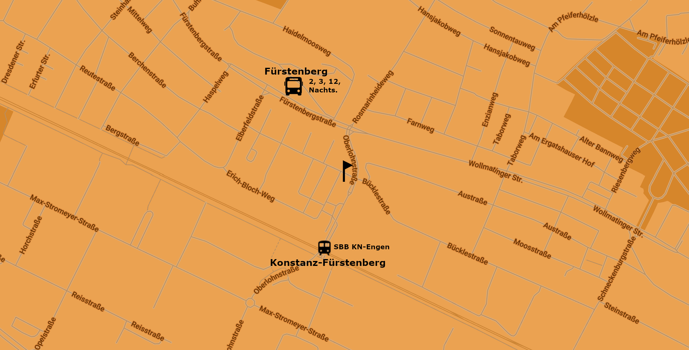

Willkommen im Contrast
Euer Zentrum für alternative Musik, Kunst und Kultur in Konstanz.
Lasst alle Hoffnung fahren, die ihr eintretet...
Über Uns
Das Contrast, betrieben von Jugendkultur e.V., ist ein Jugendclub in Konstanz, Deutschland. Bekannt für seine lebendige Subkultur-Atmosphäre, bietet Contrast eine bunte Mischung aus Punk, Techno und alternativen Events.
Voller Graffiti und gemütlicher Atmosphäre mit erschwinglichen Getränken und einem Gratistischkicker. Geöffnet an Wochentagen von 21:00 bis 01:00 Uhr und am Wochenende von 22:00 bis 03:00 Uhr, veranstalten wir verschiedene Themenabende und Events..
Im Contrast sind Zusammenhalt und Akzeptanz besonders wichtig. Unser Club ist ein sicherer Ort für alle, unabhängig von Geschlecht, Herkunft oder Interessen. Wir glauben an die Bedeutung von Gemeinschaft und daran, dass jeder willkommen ist und eine Stimme hat.
Unsere Wände spiegeln die kreative Energie und den Gemeinschaftsgeist wider. Kommt vorbei und seid Teil einer offenen und vielfältigen Gemeinschaft, die jeden willkommen heißt. Wir freuen uns darauf, euch bei unseren nächsten Veranstaltungen zu sehen!
Für mehr Informationen und aktuelle Events, besucht unsere Facebook-Seite.
This Week

Queerkneipe
Die Queerkneipe ist unser spezieller Abend für die queere Community, der jeden Montag stattfindet. Genieße eine einladende und inklusive Atmosphäre mit lebendiger Musik und großartiger Gesellschaft. Bleibe auf dem Laufenden über unsere neuesten Veranstaltungen und Community-Treffen, indem du uns auf Instagram folgst.
Labor
Labor KN ist unser experimenteller Abend, der jeden Dienstag stattfindet. Dieser Abend bietet eine Mischung aus elektronischer Musik, experimentellen Klängen und einzigartigen Auftritten. Es ist eine Nacht der Kreativität und des Erkundens neuer musikalischer Landschaften. Schaue auf unserem Instagram vorbei, um die neuesten Updates und Highlights unserer Veranstaltungen zu sehen.
Punk-Kneipe & Infokneipe
Jeden Donnerstag ist Punk-Nacht, gewidmet den Punkrock-Enthusiasten. Genieße eine Nacht mit energiegeladener musik, spannenden Gesprächen und einer rebellischen Atmosphäre. Neben Punkmusik haben wir auch Infokneipe-Sitzungen, bei denen du mehr über verschiedene soziale und politische Themen erfahren kannst. Folge uns auf Instagram für weitere Details.
Konzerte
Interessierst du dich für fantastische Live-Musik? Im Contrast bieten wir eine Vielzahl von Konzerten an, die du nicht verpassen solltest. Schau dir unsere Instagram-Seite an, um über bevorstehende Konzerte und Highlights vergangener Auftritte informiert zu bleiben. Erlebe unvergessliche Musikmomente bei uns!
Veranstaltungen
Hast du Lust auf spannende Events? Im Contrast gibt es immer aufregende Veranstaltungen zu entdecken, von Musik über Kunst bis hin zu Kultur. Folge unserer Instagram-Seite für Informationen zu bevorstehenden Events und um Highlights vergangener Veranstaltungen zu sehen. Lass dich von unseren Events begeistern und mach deinen nächsten Besuch bei uns unvergesslich!
Kontakt
Adresse: Joseph-Belli-Weg 11, Konstanz 78467, Germany
Email: info@contrast-kn.de
Nächste Busstationen: Neuwerk und Fürstenberg
Busfahrplan: Stadtwerke Konstanz Busfahrplan
Nächste Zugstation: Konstanz Fürstenberg
Öffnungszeiten:
Montag bis Donnerstag:
21:00 - 01:00 Uhr
Freitag bis Samstag:
22:00 - 03:00 Uhr
Booking
Bist du daran interessiert, im Contrast aufzutreten? Egal, ob du eine Band, ein DJ oder ein Performer bist, wir freuen uns darauf, von dir zu hören. Folge unserer Instagram-Seite für Buchungsdetails und um Highlights vergangener Auftritte zu sehen. Lass uns deinen nächsten Auftritt unvergesslich machen!